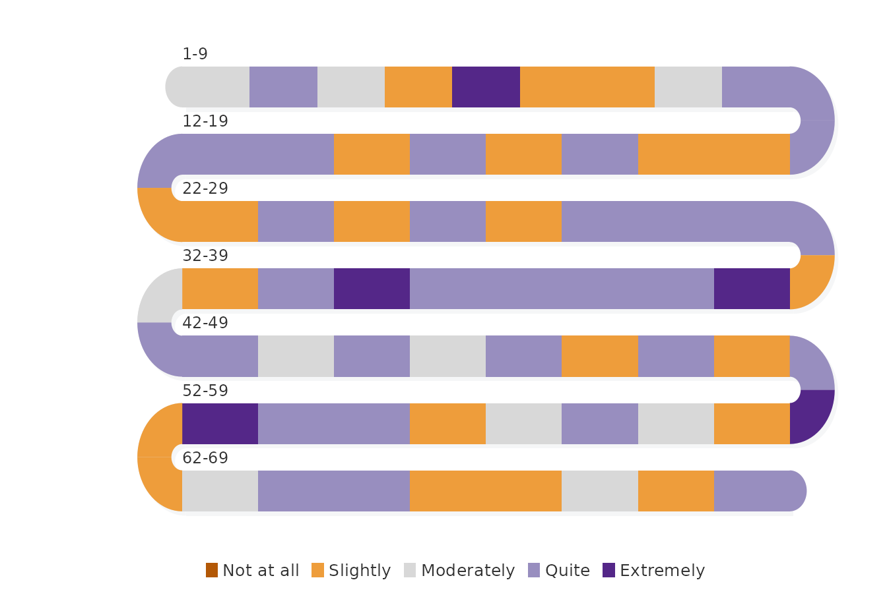
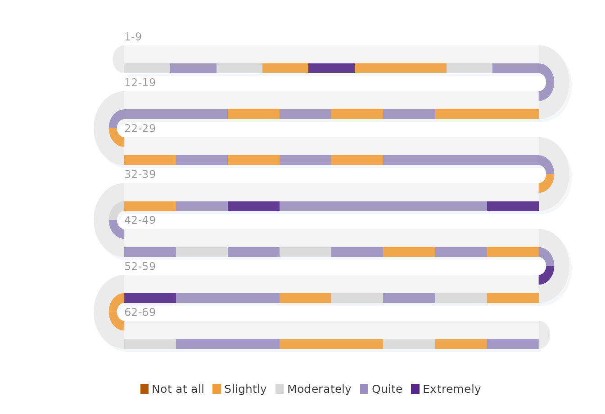
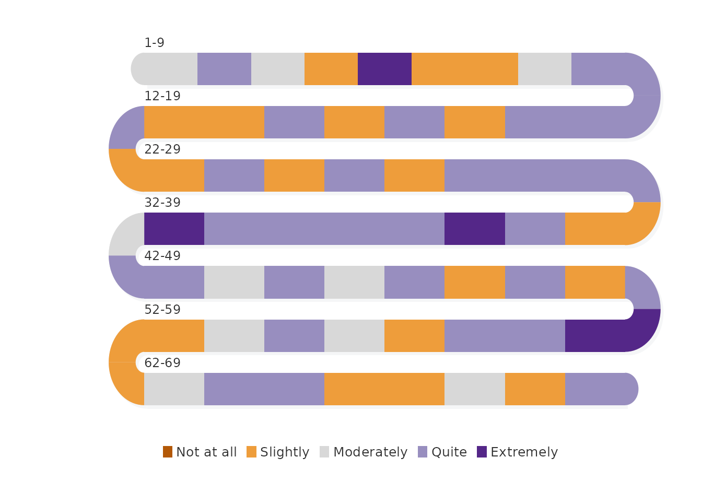
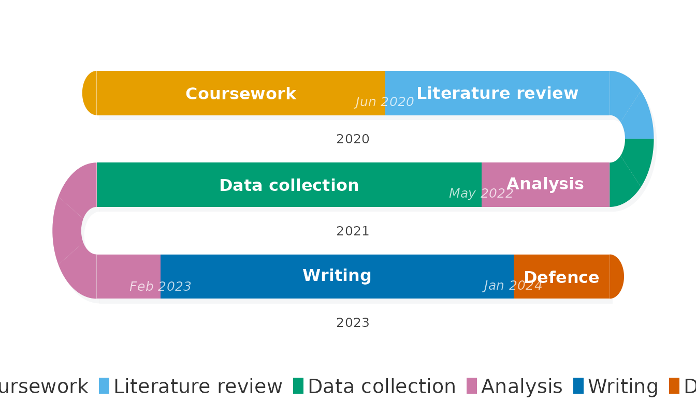
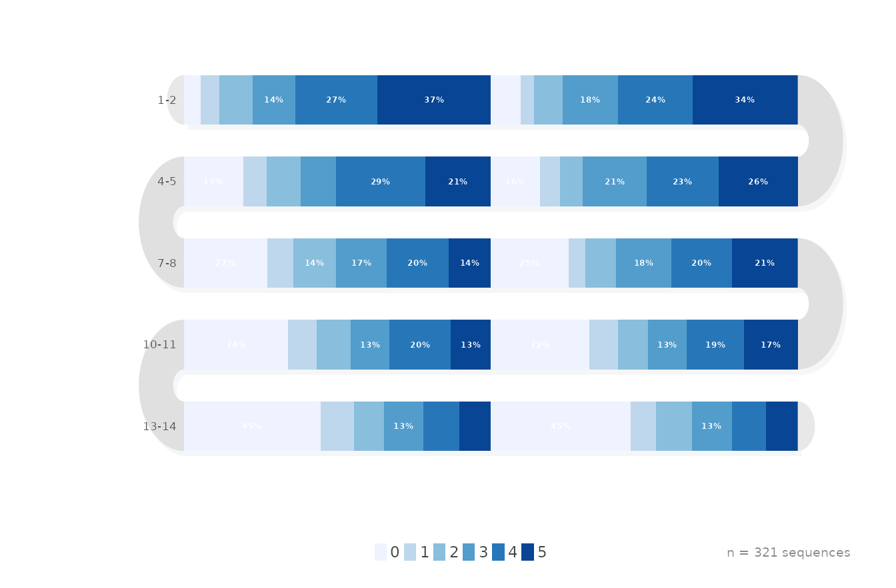
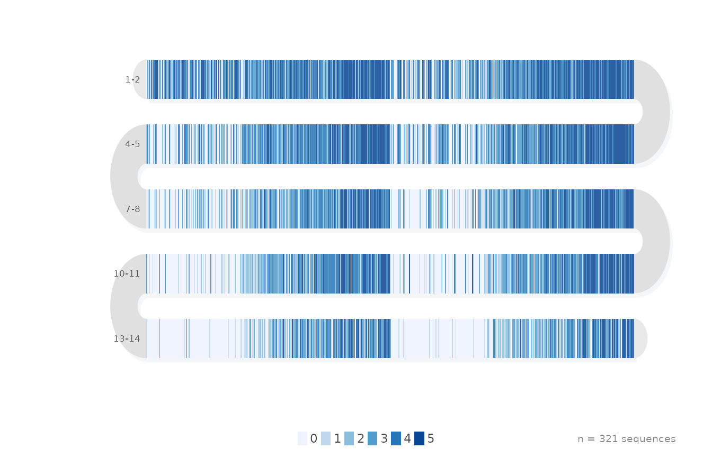

Categorical sequences and timelines
Written by Mohammed Saqr and Sonsoles López-Pernas
Source:vignettes/articles/sequences.Rmd
sequences.RmdA categorical sequence records which state a unit occupies at each of many ordered time points: the rating a participant gives at each prompt of an experience sampling study, the activity a student performs at each step of a session, the role a person holds in each month of a career. Drawn on a single horizontal axis, a sequence of more than a few dozen positions either becomes too narrow to read or too wide to fit on a page. A snake plot folds the axis into horizontal bands joined by U-turn arcs, so a long sequence keeps its order and every position keeps a readable width.
This guide covers the three functions for categorical sequences.
sequence_snake() draws one sequence position by position,
as coloured blocks or as a thin rug. timeline_snake() draws
a small number of long phases from a table of start and end dates.
multi_snake() draws many sequences at once, either one tick
per sequence (index mode) or the share of sequences in each state at
each time point (distribution mode). Continuous and clock-time data are
covered in the activity guide; colours and
reading order in the palettes and
layout guide.
Data
The examples use ema_beeps, the beep-level records of an
experience sampling study in which 321 university students rated their
emotions on prompts (“beeps”) sent to their phones over 14 study days
(Neubauer & Schmiedek, 2024; data CC-BY 4.0 at https://osf.io/bhq3p). Each
row is one answered beep.
-
Participant:
id— anonymised identifier. -
Study day:
day— 1 to 14. -
Time stamp:
start_time— date and clock time of the beep (POSIXct). -
Ratings:
happy,angry— self-reported happiness and anger on a 1–5 scale (rescaled from the original 1–7).
head(ema_beeps)
#> id day start_time happy angry
#> 1 rWHXOoWROh 1 2021-04-12 07:05:18 4 1
#> 2 TTlGjDnYES 1 2021-04-12 07:13:21 3 1
#> 3 drLUn8WkiV 1 2021-04-12 07:16:53 2 2
#> 4 FHdZyUVyoX 1 2021-04-12 07:17:46 4 1
#> 5 K484tgXmQw 1 2021-04-12 07:21:18 4 1
#> 6 HbzPYIRcdd 1 2021-04-12 07:23:33 4 1
with(ema_beeps, c(beeps = length(id), participants = length(unique(id)),
days = length(unique(day))))
#> beeps participants days
#> 11474 321 14The data hold 11,474 answered beeps from 321 participants over 14 study days. The ratings are integers; the examples below give them verbal labels so that the legends read as a response scale.
One participant’s ratings as a sequence
The first question concerns a single participant: in what order did
participant xcVDLRQOwn report each level of happiness, beep
after beep? The ratings are converted to a factor with labelled levels,
and the counts per level and the number of changes between consecutive
beeps are computed.
scale_labels <- c("Not at all", "Slightly", "Moderately", "Quite", "Extremely")
mood <- transform(subset(ema_beeps, id == "xcVDLRQOwn"),
happiness = factor(happy, levels = 1:5, labels = scale_labels))
nrow(mood)
#> [1] 69
with(mood, table(happiness))
#> happiness
#> Not at all Slightly Moderately Quite Extremely
#> 0 22 10 32 5
with(mood, sum(head(happiness, -1) != tail(happiness, -1)))
#> [1] 47The participant answered 69 beeps. The most frequent rating is Quite (32 beeps), followed by Slightly (22), Moderately (10) and Extremely (5); Not at all never occurs. The rating changes between 47 of the 68 pairs of consecutive beeps, so the sequence is dominated by short runs rather than long stable spells.
sequence_snake() takes the sequence as a vector, a
comma-separated string, or a data frame whose first character or factor
column holds the states. Without states, the states are
taken in order of first appearance, not from the factor levels; passing
states fixes the legend order to the order of the scale,
and a five-colour palette gives one colour per level.
sequence_snake(subset(mood, select = happiness),
states = scale_labels,
colors = snake_palette("sunset", n = 5))
#> Using column 'happiness' as sequence
Each block is one beep, coloured by its rating, in the order in which the beeps were answered. The blocks continue through the U-turn arcs, so no position is skipped where one band ends and the next begins; the label above each band gives the range of beep numbers it holds. Because 47 of 68 consecutive pairs differ, most blocks have a neighbour of a different colour, which is the visual counterpart of the frequent changes computed above.
Block and rug styles
The block style fills the full band height and suits sequences of up to a few hundred positions. The rug style draws each position as a thin coloured mark on a light band, which keeps individual positions apart when the sequence is long or when the eye should follow the positions rather than the runs.
sequence_snake(subset(mood, select = happiness),
states = scale_labels,
colors = snake_palette("sunset", n = 5),
style = "rug")
#> Using column 'happiness' as sequence
The encoding is the same as in the block version: one mark per beep,
in beep order, coloured by the rating. The rug style also accepts
jitter, a vertical scatter of the marks; it is off by
default because a scattered rug reads as a distribution rather than as
an ordered sequence.
Reading direction
sequence_snake() reads every band from left to right by
default (flow = "natural"), like lines of text. With
flow = "snake" the direction alternates, so the sequence
runs left to right in the first band, right to left in the second, and
so on, and consecutive positions on either side of a U-turn sit next to
each other.
sequence_snake(subset(mood, select = happiness),
states = scale_labels,
colors = snake_palette("sunset", n = 5),
flow = "snake")
#> Using column 'happiness' as sequence
The natural flow is the better default when readers compare the same position across bands; the alternating flow keeps the path continuous at the turns. The palettes and layout guide shows how the reading direction of every band can be checked from the returned layout.
Phases with dates
A career, a degree or a project consists of a few long phases, each with a start and an end date. The question here is how the time of a doctoral project is divided among its phases. The phases are entered as a small table, and the length of each phase in months is computed from its dates.
phd <- data.frame(
phase = c("Coursework", "Literature review", "Data collection",
"Analysis", "Writing", "Defence"),
start = as.Date(c("2019-09-01", "2020-06-01", "2021-03-01",
"2022-05-01", "2023-02-01", "2024-01-01")),
end = as.Date(c("2020-05-01", "2021-02-01", "2022-04-01",
"2023-01-01", "2023-12-01", "2024-03-01"))
)
phd_months <- transform(phd, months = 12 * (as.integer(format(end, "%Y")) -
as.integer(format(start, "%Y"))) +
as.integer(format(end, "%m")) -
as.integer(format(start, "%m")) + 1)
phd_months
#> phase start end months
#> 1 Coursework 2019-09-01 2020-05-01 9
#> 2 Literature review 2020-06-01 2021-02-01 9
#> 3 Data collection 2021-03-01 2022-04-01 14
#> 4 Analysis 2022-05-01 2023-01-01 9
#> 5 Writing 2023-02-01 2023-12-01 11
#> 6 Defence 2024-01-01 2024-03-01 3
with(phd_months, sum(months))
#> [1] 55The project spans 55 months. Data collection is the longest phase (14 months), writing takes 11, coursework, the literature review and the analysis take 9 each, and the defence 3.
timeline_snake() takes the three columns (state, start,
end), expands them into one block per month, writes each phase name
inside its run, and labels the month at which each phase ends.
timeline_snake(phd,
colors = c("#E69F00", "#56B4E9", "#009E73",
"#CC79A7", "#0072B2", "#D55E00"))
Each band holds about 20 months, so the 55 months fold into three bands. The width of a phase is proportional to its length in months, which places the 14-month data collection and the 3-month defence on the same scale. The transition labels mark the last month of each phase; the band labels give the year.
Many sequences at once
The last question concerns the whole cohort rather than one participant: how many beeps did each participant answer on each study day, and how does that change over the 14 days? The number of answered beeps per participant and day is a categorical state from 0 (no beep answered) to 5 (all beeps answered). The first table holds one row per participant-day; the second gives, for each day, the percentage of the 321 participants in each state.
daily <- as.data.frame(xtabs(~ id + day, data = ema_beeps),
responseName = "beeps")
head(daily)
#> id day beeps
#> 1 02mBDOaKrA 1 0
#> 2 0srrQwQTj4 1 4
#> 3 0XzIWrTHyN 1 3
#> 4 17Jua47SqY 1 4
#> 5 1bgMBkQ7SD 1 1
#> 6 1Bt6uXpvV9 1 2
round(100 * prop.table(xtabs(~ day + beeps, data = daily), margin = 1))
#> beeps
#> day 0 1 2 3 4 5
#> 1 5 6 11 14 27 37
#> 2 10 4 9 18 24 34
#> 3 13 7 7 15 28 30
#> 4 16 7 7 21 23 26
#> 5 19 7 11 12 29 21
#> 6 25 9 16 15 21 15
#> 7 27 8 14 17 20 14
#> 8 25 6 10 18 20 21
#> 9 33 8 12 12 16 19
#> 10 32 9 10 13 19 17
#> 11 34 9 11 13 20 13
#> 12 39 9 10 13 14 14
#> 13 45 11 10 13 12 10
#> 14 45 8 12 13 11 10On day 1, 37% of the participants answered all five beeps and 5% answered none. By day 14, the share answering none has risen to 45% and the share answering all five has fallen to 10%. The decline is not uniform: from day 7 to day 8 the share answering all five rises from 14% to 21% and the share answering none falls from 27% to 25%, before the decline resumes. Answering falls off over the study, with a partial recovery at the start of the second week.
multi_snake() takes a matrix or data frame with one row
per sequence and one column per time point. The cross-tabulation of
participants by day gives that layout directly.
answered <- as.data.frame.matrix(xtabs(~ id + day, data = ema_beeps))
multi_snake(answered, type = "distribution",
states = as.character(0:5),
colors = snake_palette("blues", n = 6),
rows = 5)
In distribution mode each block is one study day, drawn as a stacked
bar of the percentages in the table above, from 0 beeps (lightest) to 5
beeps (darkest). The row labels give the days each band holds. In
version 0.3.3 multi_snake() assigns the time points that
fall on a U-turn to the arc but fills the arc in neutral grey, so the
days between two consecutive row labels are counted in the layout but
not drawn; the table above remains the complete record.
Index mode keeps the individual sequences: each block contains one
thin tick per participant, coloured by that participant’s state on that
day. sort_by = "freq" orders the participants by their most
frequent state, so participants with similar answering patterns sit next
to each other in every block.
multi_snake(answered, type = "index",
states = as.character(0:5),
colors = snake_palette("blues", n = 6),
rows = 5, sort_by = "freq")
Distribution mode answers how many participants are in each state on each day; index mode answers whether the same participants stay in the same state across days.
When to use which
-
sequence_snake()— one long categorical sequence, one position per block; block style for runs, rug style for many positions. -
timeline_snake()— a few long phases given as start and end dates; phase names and transition months are written on the plot. -
multi_snake(type = "distribution")— many sequences summarised as the share in each state at each time point. -
multi_snake(type = "index")— many sequences drawn individually, sorted so that similar sequences are adjacent.
For ordinal ratings that should be read as distributions per day
rather than as sequences, survey_snake() with
var and day is the better tool; see the daily emotions case study.
Reference
Neubauer, A. B., & Schmiedek, F. (2024). Approaching academic adjustment on multiple time scales. Zeitschrift für Erziehungswissenschaft, 27(1), 147–168. https://doi.org/10.1007/s11618-023-01182-8